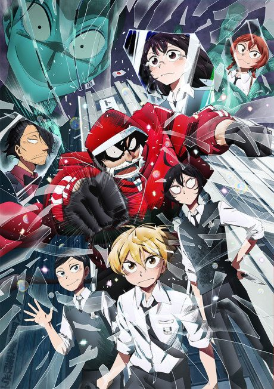

Tomorrow's Joe
あしたのジョー
Joe, a teenage orphan in the slums, is trained by an alcoholic ex-boxing coach who sees his talent.
The anime covers the whole manga.
8.1AniList score
—Animeter, no votes yet
126episodes, 2 seasons
Rate it or report where you stopped
2 seasons, 126 episodes
In airing order. Episode numbers on this site count straight through every season, so season 2 starts at episode 80.
1
1970 · TV
Tomorrow's Joe
Episodes1–7979 ep
2
1980 · TV
Tomorrow's Joe 2
Episodes80–12647 ep
Sources: AniList
More like Tomorrow's Joe
 Manga Ch. 5588.7
Manga Ch. 5588.7
 Manga Ch. 1078.4
Manga Ch. 1078.4
 Manga Ch. 1867.7
Manga Ch. 1867.7
 Manga Ch. 927.7
Manga Ch. 927.7
 Done9.0
Done9.0
 Done8.4
Done8.4
 Film8.8
Film8.8
 Done8.0
Done8.0
 Done8.5
Done8.5
 Done8.3
Done8.3

Manga Ch. 447.4 Manga Ch. 1818.4
Manga Ch. 1818.4